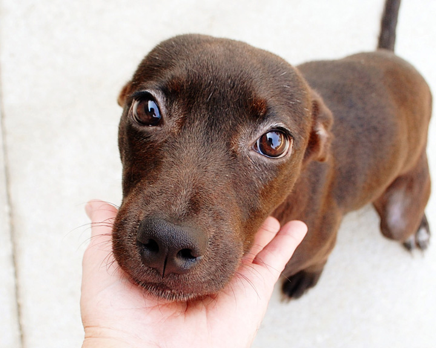
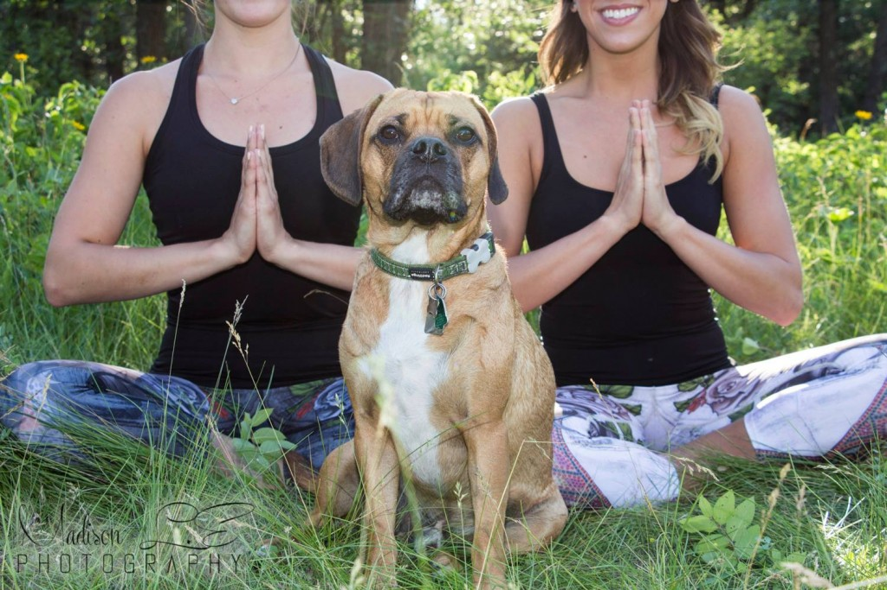

Saving Lives Starts with You!
Volunteering is an act of heroism on a grand scale and it matters profoundly. As you grow older, you will discover that you have two hands - one for helping yourself, the other for helping others. We make a living by what we get but we make a life by what we give. Volunteers do not necessarily have the time; they have the heart.
There are many ways to help. Get involved today!
It is time for all hands-on deck! Join our life-saving teams and make a positive impact in the lives of animals and their families in your community. There are many ways to support The New Hope Animal Shelter! We have different programs that you can get involved in from volunteering, to fundraising. We also have a Corporate Sponsorship program where we partner with local businesses to work together to help save more animals every day! Read on below to see if getting involved with the Shelter is right for you!
-

Volunteer At The Shelter
Do you love working with animals? Well here is your chance! We are overflowing with puppies at the Shelter and are in desperate need of dedicated and passionate volunteers. Our volunteers assist the Animal Care staff with feeding, cleaning and caring of the Shelter animals. Shift times and duration are flexible - there is no commitment necessary. The Shelter is open Monday to Friday from 11:00 am to 7:00 pm and Saturday from 11:00 am to 6:00 pm. Once the Volunteer Application and Waiver forms are signed, volunteers may come in as early as 9:00 am. Please note: Volunteers must be 14+
-

Foster A Pet
What you should know about the foster program at the New Home Animal Shelter is that we are in need of people who are able to help care for an animal who might be sick, injured or recovering from giving birth. They need a quiet room to relax and heal with a little bit of TLC. All we ask is that you have a spare room to house the animal until they are strong enough to come back to the shelter to be adopted. The length of time varies with each situation. The New Hope Animal Shelter provides all foster families with food, food and water dishes, a litter box and litter (for pregnant/lactating cats and their kittens), blankets and toys, and support in case of emergency or other unforeseen issues. Please call us at (221) 832-PETS for more information or come down to the shelter to fill out an application. We look forward to meeting you and joining our foster group!
-

Host A Fundraiser
The New Hope Animal Shelter is a registered charity which relies solely on the kindness of the general public. We are not funded in any way by the government or any government agencies. In order to continue our work, we need to raise funds through different awareness campaigns. One of those campaigns is our special events meet and greet. Various venues allow us to bring our puppies, kittens and information to the public in a setting where we can reach individuals from all walks of life. We often hear wonderful stories from families who have adopted our animals — a fabulous treat!